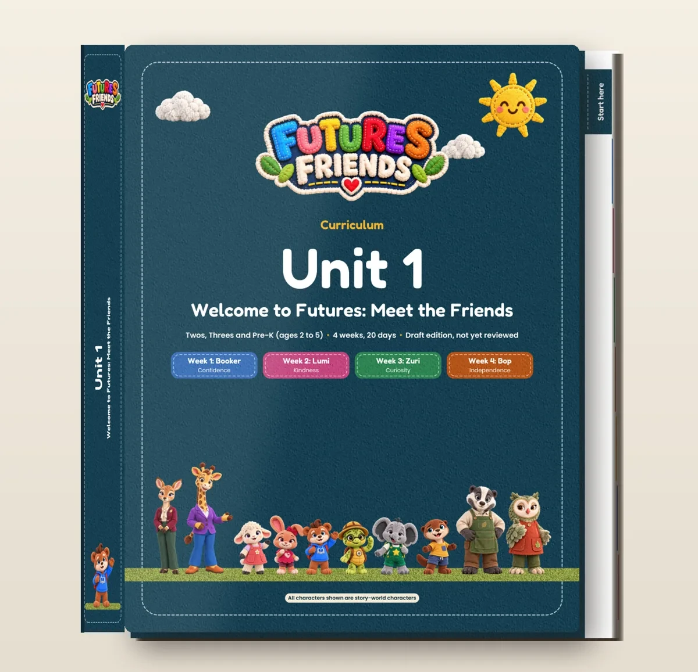
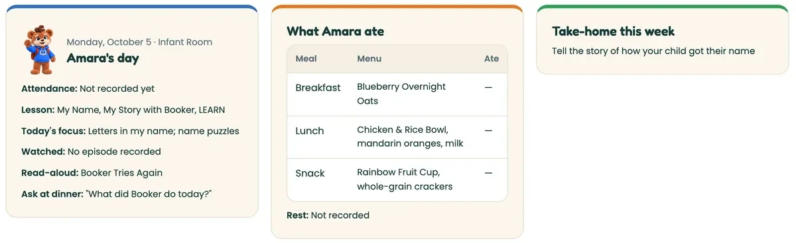

RepaymentCenter + partnersCash after delivery and support costs
OwnershipNo equityNo conversion or permanent ownership
Children need a place where learning, movement, meals and belonging fit together. Futures Friends turns that classroom experience into a program other daycares and church teams can adopt, with materials, training and ongoing support.
01
One coherent experience.
Curriculum, familiar characters, family materials, meal and movement content, staff training and classroom products.
Branded curriculum, bilingual material, classroom designs, characters, training and portal demonstrations. Order requests are configured; payment checkout is unconfigured. Six Hub feature families were tested locally in the source package. Production acceptance and paid partner traction remain unverified.
Repayment capacity is not established until bank statements, payroll, licensed capacity, owner-pay treatment and a 13-week cash forecast reconcile to the model.
1.02× center-only coverage
34 children produce $5,060 before the modeled $4,982.01 amortizing payment. That margin is too thin for the proposed 1.25× internal target.
The recommended discussion amount is $240,000. Verify borrower, IP, license, capacity, facility agreement, insurance, roster, collections, payroll and a cost-based 13-week forecast. Release partner-scale funds against paid pilots, accepted delivery, support cost and renewals.
The $500,000 later facility is not offered for immediate draw. At 34 center children it needs 72 active paid sites at 60% contribution or 107 at 40% to reach 1.25× coverage. The current growth rollout falls short.
Combined growth ends month 24 at $60,500.18 with 60% recurring and 10% setup contribution; $52,713.18 with zero setup contribution. These balances exclude unbudgeted year-two marketing, taxes, omitted owner pay and capital spending.
Learning, movement, meals and belonging belong in the same day. The business connects that experience to the people who make it work.
Brand and program imagery • evidence status in the plan
Futures Friends / Futures Learning Center
Investor business plan and financing brief
Prepared: October 8, 2026 Financing request: $240,000 business loan. The $140,000 smaller launch alternative is modeled separately. A $500,000 expansion illustration requires separate underwriting. No equity or conversion rights.
Repayment capacity is not established until actual bank statements, payroll, licensed capacity, owner-pay treatment and a 13-week cash forecast reconcile to the model.
The opportunity
A child should feel welcome before a lesson begins. A teacher needs a plan that survives a busy room. A parent needs to understand what their child is learning. Futures Friends brings those needs together: familiar characters for children, usable plans for teachers, and a clear connection between the classroom and home. The public site now presents family, center, home-daycare, church, pre-K/Head Start, and employer paths. It also shows bilingual family material, meal and movement content, character-led learning, room and zone concepts, a family portal preview, teacher portal preview, center sign-in/demo, Academy training, and a merchandise catalog.
The commercial idea has two parts. First, the company can operate or improve a local childcare center. Second, the same curriculum, training, room kit, portal, and brand can be sold to other centers, home daycares, churches, pre-K partners, and employers. Those channels must be tracked separately. A center's tuition is operating revenue. A provider's setup fee and monthly membership are licensing/service revenue. Merchandise revenue is sales revenue and its margin is unknown until supplier quotes, shipping, payment fees, returns, and inventory terms are documented.
Public pages checked October 8 show 12 monthly units and 48 theme weeks: Units 1–11 are drafts, Unit 12 is in writing, and none has recorded approval. There are 36 recipes across three levels, 27 family activities and 17 printables, including eight Spanish drafts. The 37-module Academy is a browser-local preview, not approved training credit. Hub previews use sample data; hosted tenant, payment and production acceptance remain funding gates.
Borrower and team record
The older investor package names Robert McDaniel as owner. It does not identify the legal borrower, IP-holding entity, qualified center director, or named teaching staff. Robert McDaniel's current role and the legal borrower require confirmation. The borrower name, state of formation, EIN, ownership record, director credentials, background checks, and host church agreement are closing documents, not details to fill with guesses. The old package describes one director and two teachers as the operating team, but it leaves their names and credentials blank.
Current facts and what still needs proof
The legacy investor files identify the operator as working from 3625 S Blue Ridge Blvd, Independence, Missouri, inside a host church facility. They describe tuition of $210 per week, approximately $910 per month, billed weekly, and an old snapshot of three children enrolled. They also contain conflicting capacity figures: 40, 41, and 50. None of those numbers should be presented as current licensed capacity until the license, fire approval, usable square footage, age mix, and current roster are attached.
The legacy files are useful history, not current results. They also contain unresolved placeholders for the church name, entity, payroll, and some operating costs. The old documents describe a $125,000 or $140,000 request. The financing proposal uses the requested tiers of $140,000, $240,000, and $500,000 and does not carry forward old enrollment, margin, or break-even claims as facts.
Before a note is signed, the investor should receive: the legal borrower name and good-standing record; current childcare license or exemption position; host-facility agreement; insurance; current enrollment and attendance report; twelve months of bank statements and tax returns, if available; tuition collection report; payroll and contractor schedule; vendor quotes; a current 13-week cash forecast; and written confirmation of how the proceeds may be used. Capacity and staffing must be checked against current Missouri requirements by the operator and counsel.
Product and customer
The first customer is a childcare operator who needs a clearer program, more consistent staff practice, better parent communication, and a professional way to explain the value of the center. A church or home daycare may need a smaller package. A larger center may need a room kit, staff training, bilingual family materials, reporting, and a portal. Families are the end users and the reason the center renews.
The site displays proposed provider package prices checked on October 8, 2026: Home at $1,495 setup and $89 per month; Center Starter at $2,995 setup and $229 per month; and Center Complete at $5,995 setup and $349 per month. It displays the separate Zone Boundaries add-on at $1,195 for home providers and $1,995 for classrooms. The store is configured for order requests; online payment checkout is not configured. These figures are planning references subject to order-form confirmation, delivery scope, supplier quotes, taxes, shipping, and a working payment path; they are not current trading or sellable-inventory evidence.
The site also lists a training ladder: Foundations (12 hours, included), Classroom Educator (19 hours or $349 per seat), Lead Educator and Mentor (10 hours plus practicum, $495 per seat), Leadership (12 hours, $595 per seat), Eat Rainbow Cook (12 hours, $199 per seat), Home Educator (12.5 hours, included in Home), and Trainer Academy (16 hours plus co-teaching, $1,250). Training enrollment is not open. Preview hours are self-recorded; Missouri or Kansas clock-hour approval, accepted delivery and a payment path remain unverified.
Merchandise is shown with wholesale and retail reference prices: books, posters, stickers, apparel, welcome kits, classroom sets, signs, and carpets. Examples include plush friends at $18 wholesale/$26 retail, classroom sets at $68/$99, storybooks at $8/$12.99, staff tees at $14/$20, kids tees at $12/$18, and carpets at $745 to $795 wholesale with retail pricing still to be set. Plush is deferred pending safety testing. Catalog prices are not margin; supplier, freight, fulfillment, defect and return costs need quotes.

Curriculum presentation artwork. Production acceptance and paid delivery require separate evidence.
How the business can make money
A local center collects tuition and fees from enrolled families. This is the most direct operating business and has the highest staffing and licensing risk.
Providers pay one-time setup fees for a package, room plan, training, and materials.
Providers pay monthly for curriculum access, staff support, updates, family materials, and the portal service as it becomes hosted.
Providers buy seats for advanced training and trainer development.
Centers, churches, and families buy branded books, posters, signs, apparel, zone kits, carpets, and welcome materials.
A church or pre-K/Head Start partner can buy a tailored program or license. The scope, term, support level, and renewal price need a written contract.
Employers may sponsor family learning or childcare support. This is a sales hypothesis, not booked revenue.
Custom branded carpets and room materials can become a B2B line for other organizations, with artwork approval, minimum quantities, deposits, and production lead times.
Recurring income is attractive because a monthly provider relationship can renew while a one-time kit is already in the room. It is not passive income. It requires onboarding, curriculum maintenance, support, billing, data protection, training, replacement materials, and a real cancellation policy.
Business plan / Chapter 03 of 09
Center economics
The local center is the first repayment engine. These sensitivities show the enrollment and collections it needs before debt is covered.
Brand and program imagery • evidence status in the plan
Planning sensitivity
What does enrollment support?
Test the legacy inputs: $910 tuition and $70 food per child per month, with a $23,500 fixed-cost placeholder. Owner-pay inclusion and actual costs remain unresolved. Enrollment is constrained by the current license, age mix and staffing.
Before debt$5,060After food and fixed-cost placeholder
After amortizing debt$77.99$240K case • months 13–72
Debt coverage1.02×Internal planning target: 1.25×
The first twelve months
Center cash model
The following is a planning case built from the older $210 weekly tuition and the older Option A operating cost of about $23,500 per month for ratio-compliant teachers, a director, and a cook. Food is modeled at the older draft's $70 per child per month. The old files group rent, utilities, insurance, supplies, and payroll taxes inconsistently. Their inclusion in the $23,500 placeholder is unresolved. A bill-by-bill ledger must replace it, including owner/director compensation, before underwriting.
Enrolled children
Tuition at $910/month
Food at $70/month
Operating result before debt*
20
$18,200
$1,400
($6,700)
28
$25,480
$1,960
$20
34
$30,940
$2,380
$5,060
41
$37,310
$2,870
$10,940
50
$45,500
$3,500
$18,500
*Illustration: tuition less $23,500 fixed operating cost and food. Owner-pay inclusion in the placeholder is unresolved. The illustration excludes taxes on profit, debt service, subsidies, late fees and provider revenue. The table explains why the old 41 and 50 figures cannot be presented as interchangeable. At this cost level, the center reaches operating break-even at about 28 children before debt. The $240,000 note's modeled $4,982 monthly payment moves that threshold to roughly 34 children. A 50-child plan needs current license and staffing evidence.
The center also needs cash from families before a child occupies a seat. The operating policy should require weekly payment in advance, a written late policy, and a deposit or registration fee approved by counsel. The base case uses 100% billed tuition. A 4% collection shortfall is a downside sensitivity only, not a current delinquency rate. At 34 children, that sensitivity produces $3,822.40 before debt and negative $1,159.61 after the illustrative $4,982.01 payment. Combined with month-24 partner growth, coverage falls from 1.41x to 1.16x. The growth case has only $786.83 monthly cushion above 1.25x, before omitted owner pay, tax or extra costs.
The base ramp below is a planning target, not traction. It starts at eight paying children and reaches 34 in month 12. The downside ramp reaches 24. At $910 tuition, the base center's gross tuition in month 12 would be $30,940; the downside would be $21,840. The base case covers the illustrative $4,982 note payment only after the center passes roughly 34 children, so funded working capital must carry the early months. The reference center-only cash bridge excludes provider receipts to expose reliance on enrollment. The separate combined repayment model includes daycare and church expansion under explicit sales and cost sensitivities.
Month
Base children
Downside children
Base tuition
Downside tuition
1
8
8
$7,280
$7,280
2
8
8
$7,280
$7,280
3
10
9
$9,100
$8,190
4
14
11
$12,740
$10,010
5
14
11
$12,740
$10,010
6
22
15
$20,020
$13,650
7
22
15
$20,020
$13,650
8
25
17
$22,750
$15,470
9
29
19
$26,390
$17,290
10
29
19
$26,390
$17,290
11
32
22
$29,120
$20,020
12
34
24
$30,940
$21,840
Under the illustrative cost case, month 12 operating cash before debt is about $5,060 at 34 children and negative $3,340 at 24 children. At those enrollment levels, the later $4,982 amortizing payment leaves about $78 in the base case and an $8,322 shortfall in the downside, before any omitted owner pay and tax. Month 12 itself still uses interest-only payments. This is why the financing plan needs a reserve, staged hiring, weekly collections, and provider sales. It also gives an investor a usable downside test rather than a full-enrollment promise.
Provider sales case and cash contribution
Provider sales are separate from the center. A modest planning case assumes two Home packages and three Center Starter packages by month 12. That is five provider customers, $11,975 of proposed setup list-price revenue, and $865 of proposed monthly list-price revenue (2 × $89 plus 3 × $229) before refunds, sales costs, support, and tax. The monthly figure is contingent: billing begins only after the Hub is live and Unit 2 is delivered. The order-request path is configured, but no settled provider receipts are evidenced; this remains a target. A Center Complete package is upside only after a signed buyer and delivery plan.
Owner cash contribution is not included in the forecast and remains unknown pending bank statements and a contributed-cost ledger. A documented contribution, staged draw, or reserve condition may be negotiated in the final note, but it is not existing cash or a forecast assumption until evidenced.
Customer acquisition cost should be measured by channel. For planning only, the base funnel assumes a one-month $6,000 local-marketing test, 60 qualified inquiries, 24 tours, and 6 new center enrollments, which is $1,000 per enrolled child. A downside case assumes the same spend produces 30 inquiries, 12 tours, and 2 enrollments, or $3,000 per enrollment. The provider funnel assumes 20 qualified operator conversations, 6 demos, 2 proposals, and 1 paid setup per month. The $6,000 test is a funnel sensitivity, not a twelve-month spending commitment. The cash bridge schedules $45,000 of annual marketing; any larger pilot must be reallocated within that ceiling or funded separately. These are test targets. Track inquiry source, tour attendance, deposit date, first payment, churn, and support hours before increasing spend.
Debt coverage and milestones
Debt service coverage ratio is operating cash available for debt service divided by required principal and interest. Using the center illustration alone, 34 children produces about $5,060 before debt and a DSCR of about 1.02 against the $4,982 payment. That is too thin for a lender. A 41-child month produces about $10,940 before debt and a DSCR of about 2.20. The proposed internal coverage target is at least 1.25; the lender sets its own covenant. This target must be measured after actual owner pay and taxes are included, which means the operator needs more than the simple 34-child threshold or must show dependable provider cash.
For the $240,000 tier, release funds in three steps: an initial operating and compliance draw after entity, license, insurance, and host agreement documents; a marketing and portal draw after the 13-week cash forecast and vendor quotes; and a scale draw after a paid provider pilot and current enrollment report. The $500,000 tier should use the same structure with an additional gate before inventory or a second-site pilot.
Business plan / Chapter 04 of 09
Go to market
Start with a supported local pilot. Earn the next sale through delivery, measured cost and a renewal the customer chooses to pay.
Brand and program imagery • evidence status in the plan
Go-to-market
The first sale should be a measurable pilot: one center or home provider, a defined room or zone, staff onboarding, parent orientation, four weeks of use, and a before/after report. Sell the outcome in plain terms: a daily rhythm staff can follow, a parent can understand, and a director can inspect.
The sales sequence is: short demo; site and capacity discovery; written fit and quote; deposit; setup; staff training; parent launch; 30-day review; monthly renewal. Churches and home daycares should have their own landing page and offer. A generic “for everyone” pitch will make the buyer work too hard.
Useful proof to collect is not a vanity count. It is signed pilot agreements, paid setup invoices, renewal rate, staff completion, parent participation, attendance, incident and complaint trend, time saved by the director, and gross margin by product. Until those records exist, they must remain targets.
First market and service economics
Start in the Independence and Kansas City area with owner-operated centers, home providers, and church programs that can participate in a supported pilot. The first proof case is five provider customers. The combined repayment appendix separately tests a continued rollout; neither is a claim about regional market share. Build the addressable-market count from the current Missouri provider directory, filter by geography, age groups and decision-maker access, then record outreach and qualified demand. A nationwide childcare count would exaggerate this launch opportunity.
Provider subscriptions are a proposed recurring channel. Only signed, paid, active accounts count as recurring revenue; proposals, demos, unpaid invoices, and projected centers do not.
The business earns renewals when the teacher uses the plan, the parent sees its value, and the director can get help. Each pilot must record onboarding hours, materials, freight, payment fees, recurring support time, and cancellations. The proposed $865 monthly receipts from five providers are gross revenue. Only the contribution left after delivery and support can service debt. No provider margin or lifetime value is claimed before that evidence exists.
Management and accountability
The launch needs accountable owners for center operations, curriculum and bilingual review, platform/privacy, provider implementation, and sales/fulfillment. These are responsibilities to assign, not five funded hires. The center director must hold the required qualifications; outside advisers and contractors need written scope, cost, and rights terms. Monthly lender reporting should be prepared by the finance owner and reconciled to bank records.
Competition and position
Operators already have serious options. Brightwheel, Procare and Lillio publish tools for center administration, billing and family communication; Brightwheel and Lillio also describe learning or curriculum features. Futures Friends should not win a sale by pretending those products are incomplete. The comparison is whether an operator wants this particular learning program and the support to use it in the room.
Buyer decision
Established alternatives
Futures Friends case to test
Run billing, attendance and family messages
Brightwheel, Procare and Lillio have established offers
Integrate with the operator's system; prove any replacement workflow before promising it
Give the classroom a clear identity
Compare the operator's existing curriculum, room materials and training
Coordinated characters, zones, stories, food, movement and family resources
Help staff use the program consistently
Compare onboarding, training and available support
A supported launch with recorded preparation time, staff use and response time
Serve a home daycare or church program
Compare package cost, scope and operating fit
A smaller implementation and a church-specific scope rather than a center-sized obligation
The advantage worth building is the connection between the child-facing world and daily delivery: a familiar character in the story, the same cue in a classroom zone, a teacher who can use the plan, and a parent who understands the activity. Artwork alone is easy to imitate. Rights records, reviewed content, repeatable onboarding, useful support and renewed accounts would make that position harder to copy.
Offer a four-week paid pilot with a written room or zone scope, materials list, onboarding schedule, staff orientation and parent launch. Document the deposit, direct materials and freight, setup labor, first settled invoice, support hours and a 30-day review. Agree in advance what is delivered and when monthly billing may begin. Included training cannot be invoiced again as a separate sale.
The first three implementation types should be tested individually: a home provider, a small center, and a church program when its scope is ready. A church may operate weekday childcare, Sunday classes or midweek children's activities. The contract must name the use, access times, storage, responsible staff, safeguarding, pickup, insurance and information ownership. Do not imply a curriculum license covers the host's operating obligations.
Decision
Evidence required
Proposed management gate
Repeat the first sale
Paid delivery, known direct cost, customer acceptance
One delivered implementation and first settled monthly invoice
Increase acquisition spending
Collected fees, support hours, usage and cancellation record
Five active paid sites with renewal or documented 90-day review
Underwrite the $500,000 alternative
Cohort contribution, staffing capacity, cash forecast and larger debt payment
A separate scale case; the $240,000 sensitivity does not justify this loan
Seek $1 million of financing
Historical results where available; integrated income, balance sheet, cash and capex projections
A complete five-year financing case with monthly first-year detail
These gates are proposed operating decisions, not lender commitments or accreditation requirements. The $1 million question is about the amount of financing sought, not the company's valuation. A $100 million future is an ambition, not a substantiated valuation. At $349 monthly, 1,000 fully paying Complete accounts produce $4.188 million in annual subscription revenue before costs; 10,000 produce $41.88 million. Neither figure establishes enterprise value. Distribution, renewal, margin, content rights and delivery capacity would have to support the scale.
The financing presentation uses Sequoia's business-plan framework ↗ to explain the customer, offer, timing, alternatives and business model. The requested financial evidence follows SBA business-plan guidance ↗. Neither source has reviewed or endorsed the company.
Business plan / Chapter 05 of 09
The capital plan
The $240,000 request funds the operating base, marketing and service completion. Smaller and larger alternatives have different conditions.
Brand and program imagery • evidence status in the plan
Indicative loan • no equity
Choose the financing case.
Alternatives, not cumulative rounds. Illustrations assume full funding at closing, 9% annual interest, 12 interest-only months and 60 amortizing payments. Staged advances require a fresh schedule. Fees and any finite bonus are excluded; final payment absorbs rounding.
Planning allocations, not invoices. Operating runway and reserve are cash designations; do not add them again as expense in the cash bridge.
Use of funds
The following budgets are planning allocations, not invoices. They intentionally include marketing and operating support in the $240,000 request. Release against a budget and monthly report.
$140,000 proof-and-fill note
Center operating runway: $70,000
Enrollment and local marketing: $20,000
Licensing, insurance, compliance, and professional fees: $15,000
Portal and service completion: $15,000
Cash reserve: $20,000
This tier protects the first operating site and tests paid provider demand. It does not fund a broad rollout.
$240,000 base execution note
Center operating runway: $90,000
Marketing and sales: $45,000
Operations, compliance, and professional fees: $25,000
Portal, hosting, security, and service work: $30,000
Merchandise samples and launch inventory: $15,000
Cash reserve: $35,000
This is the recommended meeting ask because it funds the local operating base and gives the provider offer a real sales and support budget. It still assumes staged spending and verified vendor costs.
$500,000 scale note
Center operating runway: $150,000
Marketing and sales: $90,000
Hosting, security, integrations, and portal build: $80,000
Hiring, training, and operating systems: $55,000
Merchandise production and inventory: $45,000
Second-site or partner pilot: $30,000
Cash reserve: $50,000
The $500,000 tier is not offered for immediate draw. Any later facility should be released in milestones. It should not be described as proof that a second site or a merchandise business already exists.
Proposed request handling: the founder owns the sales queue until a customer-success lead is appointed. Acknowledge each request within one business day, record its owner and next step, and test receipt and follow-up before publishing that response commitment. A monitored inbox and response performance have not yet been verified.
Proposed financing
The proposed $240,000 structure is a committed loan facility with staged advances, subject to lender agreement. The payment illustration assumes the full amount is funded at closing; it does not price staged advances. Before signing, recalculate interest, principal payments and the cash bridge from the agreed draw dates and interest-only clock. The borrower pays principal and interest. The lender receives no shares, voting rights, permanent ownership, or conversion right. Security, personal guaranty, priority, reporting, default, and remedies must be written by Missouri counsel after the borrower and collateral are verified.
For planning only, the model uses 9% annual interest, twelve months of interest-only payments, then sixty months of principal amortization at the same rate. It assumes interest accrues only on funded principal, no capitalized interest, fees, or penalty. The final note must state whether the interest-only clock starts at closing, each draw, or a milestone. At $240,000, the first twelve months are $1,800 per month interest; the next sixty months are about $4,982 per month. Total scheduled payments under that illustration are about $320,520, including $21,600 of first-year interest. The exact note may differ.
At $140,000 the illustration is $1,050 per month for the first year and about $2,906 per month for the next sixty months; total scheduled payments are $186,970.18. At $240,000, total scheduled payments are $320,520.32. At $500,000 it is $3,750 per month for the first year and about $10,379 per month for the next sixty months; total scheduled payments are $667,750.66. These are model outputs rounded only for display and remain subject to the final note.
For the $500,000 alternative only, counsel could evaluate a finite cash bonus alongside the note, ending within 36 months and capped at $35,000. The final agreement would define the qualifying milestone or collected provider-service revenue, payment waterfall and audit rights. Center tuition, merchandise, refunds and pass-through taxes would be excluded from any provider-revenue calculation. The bonus would create no company ownership or conversion right. No bonus is included in the forecast, and no rate or return is offered or guaranteed here. Missouri counsel must review securities, lending, tax and usury rules before proposing terms. A fixed-interest note without the bonus remains the simpler alternative.
Downside and repayment
Repayment cannot depend on a full classroom. The base case should show center cash flow separately from provider fees and merchandise. A downside case should assume slower enrollment, delayed provider sales, no carpet inventory sale, and a 90-day delay in hosting. The modeled downside exhausts cash in month 10. Protecting scheduled payments therefore requires an earlier spending reduction, documented additional funding, or revised terms. A reserve alone does not close the gap. Staffing changes must preserve required ratios.
The lender should receive a monthly cash report, bank reconciliation, enrollment report, accounts payable, provider pipeline, and use-of-funds variance. A covenant package can require notice before a new lease, material purchase, related-party payment, or change in use of proceeds. A draw schedule is safer than giving the full scale tier at closing.
Business plan / Chapter 06 of 09
Proof & conditions
The offer is visible. Paid traction, operating records and production acceptance need their own evidence before capital is released.

Brand and program imagery • evidence status in the plan
Product status and lender conditions
The public site is a polished demonstration of the brand, bilingual learning direction, portal concepts, Academy, meal and movement plans, characters, zones, and catalog. It is not a hosted production Hub. Production acceptance details are in the companion. The release manifest and store must be reconciled to one approved bill of materials before any package is sold or supplier cost is modeled. Package quantities remain proposed until that reconciliation. The store is configured for requests, with checkout/payment credentials unconfigured and fulfillment acceptance outstanding. Store and carpet materials remain catalog evidence. Monthly provider billing starts only after the Hub is live and Unit 2 is delivered.
This is a planning case, not historical performance. The center illustration uses legacy tuition and a $23,500 monthly operating-cost placeholder. That placeholder combines or excludes categories that must be replaced before underwriting, including owner pay and taxes. Break-even, DSCR, and repayment capacity are sensitivities until the lender receives the monthly cost schedule, bank statements, payroll register, facility agreement, insurance, license, current roster, and 13-week cash forecast.
The center-only ramp produces cumulative operating cash of approximately ($74,520) in the base case and ($132,480) in the downside case before debt. The base assumes collection of 100% of billed tuition; a 4% collection shortfall is a separate sensitivity.
The $140,000 proof-and-fill bridge assumes the full draw occurs on day one, interest starts at closing, provider receipts are zero, and $50,000 is spent outside the center: $20,000 marketing, $15,000 compliance/professional work, and $15,000 portal/service completion. Against $74,520 of base center cash loss and $12,600 of first-year interest, ending cash is $2,880. Against the $132,480 downside center loss, ending cash is ($55,080). The $20,000 reserve is breached by $17,120 in the base case and $75,080 in the downside case. The $240,000 bridge remains separately modeled at $28,880 base ending cash and ($29,080) downside ending cash. Both are decision bridges, not proof of available cash; provider receipts are conservatively zero.
The full illustrative bridge is shown below so the investor can see the cash path rather than a single endpoint. Provider receipts remain zero in every month.
Mo.
Opening cash (base)
Center cash (base)
Center cash (downside)
Non-center spend
Interest
Ending cash (base)
Ending cash (downside)
1
$240,000
($16,780)
($16,780)
$14,000
$1,800
$207,420
$207,420
2
$207,420
($16,780)
($16,780)
$14,000
$1,800
$174,840
$174,840
3
$174,840
($15,100)
($15,940)
$13,000
$1,800
$144,940
$144,100
4
$144,940
($11,740)
($14,260)
$10,000
$1,800
$121,400
$118,040
5
$121,400
($11,740)
($14,260)
$10,000
$1,800
$97,860
$91,980
6
$97,860
($5,020)
($10,900)
$13,000
$1,800
$78,040
$66,280
7
$78,040
($5,020)
($10,900)
$8,000
$1,800
$63,220
$45,580
8
$63,220
($2,500)
($9,220)
$8,000
$1,800
$50,920
$26,560
9
$50,920
$860
($7,540)
$8,000
$1,800
$41,980
$9,220
10
$41,980
$860
($7,540)
$8,000
$1,800
$33,040
($8,120)
11
$33,040
$3,380
($5,020)
$4,500
$1,800
$30,120
($19,440)
12
$30,120
$5,060
($3,340)
$4,500
$1,800
$28,880
($29,080)
The $240,000 base case ends with $28,880, which is $6,120 below the proposed $35,000 reserve. The downside ends at negative $29,080, a $64,080 shortfall against that reserve. To preserve the reserve under these assumptions, defer at least $6,120 of discretionary spending in the base case; the downside requires $64,080 of cuts, documented net receipts, or new funding. Use the combined expansion scenarios to size the partner-sales requirement; release scale funds against collected receipts and verified delivery costs. Review the 13-week forecast weekly and suspend merchandise commitments before cash crosses the reserve floor.
The bridge treats the $90,000 runway allocation as a funding designation, not an additional expense. Center losses already appear in the center-cash columns. The $25,000 operations budget is for incremental compliance and professional work; it must not duplicate costs inside the $23,500 monthly placeholder. An invoice ledger must resolve this boundary before money is released.
After the interest-only period, the $240,000 payment is about $4,982.01 per month. The modeled schedule has 12 interest-only payments followed by 60 amortizing payments, for 72 payments in total. It assumes the full principal is funded on day one; staged funding requires a fresh schedule. At the downside month-12 enrollment level, the later amortizing payment would leave an $8,322 shortfall before any omitted owner pay and tax. The $500,000 payment of about $10,379 is not supportable from the center ramp; that alternative requires tested partner scale, documented provider receipts, or a different underwriting case before a draw. The $140,000 and $500,000 amounts are alternatives to the recommended $240,000 ask, not cumulative rounds. Monthly timing for the $140,000 alternative and a full cash bridge for the $500,000 alternative remain underwriting work.
Before the first draw, the lender should receive the legal borrower and IP records, license and capacity evidence, host agreement, insurance, current roster and deposits, payroll and tax obligations, vendor quotes, 13-week cash forecast, data/privacy plan, and note terms. Collateral, security priority, personal guaranty, and enforcement remedies are currently unknown and must be negotiated with counsel.
Investor questions to answer before closing
Who is the legal borrower and who owns the intellectual property? The borrower, state, EIN, IP holder, ownership record, and assignments remain closing diligence items.
What is the current license, capacity, age mix, and staff ratio? The current license or exemption position, usable capacity, age mix, and ratios must be attached before capacity is underwritten.
How many children are enrolled and paying today? The package should include the current roster, attendance report, tuition ledger, and matching bank deposits; no legacy count is treated as current traction.
What is the host church agreement? Attach the executed facility agreement, renewal terms, termination rights, and a continuity plan if the arrangement ends.
What are monthly costs? Replace the $23,500 placeholder with payroll, food, rent, utilities, insurance, taxes, owner pay, and other recurring bills supported by records.
What releases the $240,000? Use staged draws tied to entity/license documents, vendor quotes, the 13-week forecast, portal/service milestones, and a paid provider pilot.
Which portal functions are live? Public previews and demo surfaces are documented; authenticated delivery, tenant separation, role enforcement, audit, backup, and live data storage remain acceptance gates.
How is private information protected? Access must be tenant-scoped and role-limited, with consent, retention, audit, export, recovery, and incident procedures tested before production use.
What are renewal and cancellation terms? They remain proposed until an order form states the service scope, renewal date, cancellation notice, refunds, replacement policy, and support response target.
What are the merchandise terms? The catalog is design evidence. Supplier quotes, minimum orders, shipping, returns, storage, inventory, and fulfillment are still required.
What is the repayment source? Repayment is expected from documented center operating cash plus provider setup and recurring receipts; merchandise and a full classroom are not the sole source.
What happens if enrollment is slow? Draws pause, discretionary marketing and inventory are cut, staffing is staged, and the reserve and provider pipeline are reviewed against the monthly covenant report.
The investor will also ask why the $240,000 request is larger than the former $140,000 concept. The answer is that the newer request sets aside $45,000 for enrollment and provider sales, $25,000 for operations and compliance, $30,000 for portal hosting and security work, and $35,000 for reserve. Those dollars buy time to finish the service and test demand. They do not create revenue by themselves.
The $500,000 option funds a larger reserve, hosting and integrations, a measured merchandise run, and a partner pilot. Its $10,379 monthly amortizing payment exceeds the modeled center cash. It requires a new underwriting case with proven provider contribution before closing or drawing scale funds.
Other structures worth discussing are a smaller term note plus a committed draw facility, equipment financing against quoted assets, or a fixed-dollar milestone bonus instead of revenue participation. Customer deposits and annual prepaid plans can reduce working-capital needs only after delivery terms, refunds, and service capacity are established. None gives the lender permanent ownership.
Research and source record
The presentation follows Sequoia's company-purpose, customer-problem, market, competition, business-model, team and financial sequence. The lending diligence follows SBA business-plan guidance. These references guide the package; neither organization has reviewed or endorsed Futures Friends.
SBA: Plan your business ↗ - business-plan and financial preparation. Historical records and a supported multi-year forecast remain lender diligence; this package supplies a twelve-month sensitivity model, not an invented five-year forecast.
Website offers were checked on October 8, 2026; curriculum and cast manifests were checked again on October 8. The three revised documents reconcile the legacy investor files, production Bible, program library, and current development records. Editable financial assumptions accompany the package. All amounts are US dollars. Counsel-reviewed terms and verified operator records are required before financing closes.
Business plan / Chapter 07 of 09
Delivery & operations
A polished program earns trust through the ordinary details: staffing, safe routines, clear family policies and dependable support.
Brand and program imagery • evidence status in the plan
Restored operating detail from the original proposal
Program promise and family experience
Futures Learning Center is designed for children ages two through five during a full weekday, with the daily rhythm flexing by age, weather, rest needs, and licensing requirements. The original proposal organized the family promise around four practical outcomes: Read (language, books, listening, early literacy), Play (movement, pretend play, problem-solving), Explore (hands-on discovery with teacher guidance), and Belong (safe routines, caring interaction, and a dependable relationship with the adults in the room). This framing remains useful because it explains what tuition buys without turning the program into a list of software features.
A sample rhythm includes arrival and breakfast, circle time, learning centers, outdoor play, lunch, nap or quiet time, snack and stories, art and music, open play, and pickup through the published closing window. The operator must confirm the final timetable, meal policy, curriculum framework, and age-group transitions before presenting it as an operating schedule. The plan should include a family handbook with attendance, illness, medication, late pickup, tuition, deposits, withdrawal, emergency communication, and authorized pickup rules.
The bilingual direction is a service feature with operating obligations. Spanish materials, captions, family messages, and translated enrollment information need human review, consistent terminology, and a clear answer for which documents are legally controlling. Translation alone does not establish bilingual staffing or a bilingual classroom. Staffing and language coverage should be shown in the center roster and pilot plan.
Enrollment-based staffing and capacity control
The center cannot use an enrollment target without a staffing schedule. The director should maintain an age-banded roster, attendance forecast, teacher schedule, opening and closing coverage, break coverage, substitute plan, and ratio check for each operating block. A new enrollment should trigger a ratio and room-capacity review before the deposit is accepted. The plan's 20, 28, 34, 41, and 50-child cases are financial sensitivities; they do not establish licensed capacity or authorize a staffing pattern.
A practical staffing sequence is:
At the opening ramp, the director confirms the minimum qualified coverage for the enrolled age mix and uses the existing classroom team only if the roster and ratios support it.
Before moving through the low-20s, add scheduled coverage for breaks, opening, closing, and absences rather than counting the director twice.
Before the mid-30s, document the additional classroom or float position required by the age mix and room plan.
Before any 41- or 50-child case, attach the current license, room capacity, fire and occupancy evidence, age mix, staff credentials, and a payroll schedule that includes substitutes and paid breaks.
The $23,500 monthly fixed-cost placeholder is not a staffing authorization. It is an old planning input that may combine payroll, occupancy, administration, and other costs. Every hiring step should have a wage, payroll-tax, benefit, substitute, and start-date line in the operating budget. If enrollment stalls, staffing reductions must preserve required ratios and safe supervision; the savings plan cannot simply remove the adult who makes the room compliant.
Facility, licensing, and church relationship
The original package described a host-church facility at 3625 S Blue Ridge Blvd, Independence, Missouri, with a weekday program and a planned capacity that various files called 40, 41, or 50. These are historical descriptions. The closing file must contain the executed facility agreement, term and renewal rights, utilities and maintenance responsibility, use restrictions, insurance requirements, emergency access, storage rights, signage permission, and a continuity plan if the church relationship ends.
Licensing status, inspection history, fire and occupancy approvals, background checks, mandated reporter training, first-aid and CPR coverage, and any subsidy or food-program contract must be verified from current records. The investor should not underwrite a planned capacity from a marketing page. A license or exemption, the age mix, usable classroom square footage, and required ratios define the operating ceiling.
The church is a possible host and referral partner; it is not assumed to be a paying customer, guarantor, owner, or permanent facility. Any church program or license is a separate commercial relationship requiring scope, fee, term, data responsibilities, insurance, and termination language.
Five-year planning frame and financial discipline
The original proposal included a five-year revenue and operating-profit projection. Those figures are retired from the underwriting case because their enrollment, cost, and capacity assumptions were not verified. A longer-range view is still useful as a planning frame, but it must be rebuilt from monthly actuals after the center has a bank-reconciled roster, payroll ledger, tuition collections, provider invoices, merchandise cost records, and a tested portal service. The current model therefore emphasizes a twelve-month operating ramp, an explicit downside, and debt-service constraints instead of presenting a distant profit number as a promise.
The accounting boundary is essential:
Business line
Cash source
Costs that must be attached
Underwriting status
Local center
Family tuition, registration, approved fees, possible subsidy
This separation prevents a center tuition dollar from being counted again as provider revenue, and prevents catalog list prices from being treated as cash margin. Monthly management reporting should show revenue, direct cost, gross contribution, support hours, refunds, and cash collected by line.
Customer acquisition and retention evidence
The original marketing section proposed local search, parent referrals, tours, video, social content, and provider outreach. The current plan keeps those channels but assigns a proof requirement to each. A center funnel should report inquiries, contact rate, tour bookings, tour attendance, application, deposit, first payment, attendance after 30 days, and withdrawal. A provider funnel should report qualified conversations, demos, proposals, setup deposits, implementation completion, first renewal, and support hours. A marketing dollar is scalable only after the source and payback can be measured.
The first center campaign should use a short geographic test with one message, one landing page, one tour path, and a defined budget. Parent-facing claims must describe the actual program and avoid promising developmental or health outcomes that have not been measured. Provider-facing claims must distinguish a live workflow from a preview. Testimonials require permission and a traceable customer record.
Retention is operational. Families renew when care is reliable, communication is clear, children are known by staff, and tuition policies are predictable. Providers renew when staff can use the plans, directors can inspect activity, parents understand the value, and support responds. The 30-day and 90-day reviews should produce a short scorecard rather than a promotional anecdote.
Implementation roadmap and acceptance gates
Phase 1 — close the evidence file. Confirm borrower, IP owner, facility agreement, license, insurance, roster, payroll, tuition ledger, vendor quotes, privacy plan, and permitted use of proceeds.
Phase 2 — prove the center. Run the current enrollment ramp with ratio checks, weekly collections, attendance reporting, staff training, family communication, and a 13-week cash forecast. Replace the legacy cost placeholder with actual invoices.
Phase 3 — prove one provider. Select one home or center pilot, collect a deposit only after scope and delivery dates are written, deliver the room/curriculum package, train staff, and complete a 30-day review. Do not recognize monthly billing until the Hub is live and Unit 2 is delivered.
Phase 4 — host and secure the service. Before production data, verify tenant separation, role permissions, consent, audit history, backup and recovery, export, retention, incident response, and bilingual content review. A polished public site is a demonstration; acceptance requires a working authenticated workflow and an operational owner.
Phase 5 — scale by evidence. Release inventory, expanded marketing, or a second-site pilot only when the prior phase has paid receipts, measured delivery cost, renewal evidence, and cash coverage. The $500,000 alternative remains conditional on partner scale and cannot be justified by the center alone.
Original sections retained, revised, or retired
The original proposal's executive summary, company profile, market opportunity, program and tuition, Futures Friends ecosystem, operations and compliance, enrollment growth, financial plan, funding request, investment terms, comparison, risk mitigation, management, and appendices are represented in this restored document. Historical headline claims about current enrollment, licensed capacity, five-year revenue, operating profit, security, personal guarantees, and current platform readiness were revised into evidence requirements or planning sensitivities. The original $140,000 request is retained as an alternative; the recommended request is now $240,000 because the current plan includes marketing, operations/compliance, portal completion, and reserve. The $500,000 tier is retained only as a conditional scale alternative.
Business plan / Chapter 08 of 09
Financial diligence
Trace the equations, cash timing, assumptions, open records and reporting requirements behind the financing discussion.
Brand and program imagery • evidence status in the plan
Planning sensitivity
Follow the cash, month by month.
The $240,000 center-only bridge includes center ramp losses, $115,000 non-center spending and $21,600 interest. Provider receipts and owner contribution are zero in this reference case.
Investor Underwriting and Financial Diligence Appendix
Prepared: October 8, 2026 Companion to:restored-business-content.mdEditable model:financials.jsonStatus: decision support for investor discussion; indicative debt terms and planning assumptions require verification before a note is signed.
Purpose and reading order
This appendix gives an investor a way to test the numbers behind the business plan. It separates the operating center, provider subscriptions, merchandise, and platform work. It also identifies the records that must be produced before a lender can underwrite repayment. The business plan explains the product and the mission. This document explains what the current model can support, where it is still a target, and what evidence closes the gap.
The recommended discussion amount is $240,000. The $140,000 and $500,000 cases are alternatives, not cumulative rounds. None of the cases sells stock, membership, conversion rights, or permanent ownership. The intended structure is a loan documented by counsel. Interest, repayment terms, security, and any limited commercial upside must be stated in the final note.
1. Model map and evidence hierarchy
Decision item
Current source
What it supports
What remains open
Product, portals, curriculum, bilingual site, zones, characters, store
Current public site snapshot and business plan
Demonstration of the offer and intended customer experience
Production hosting, role controls, billing, data retention, and customer acceptance
Tuition, food, fixed operating placeholder
financials.json → center_scenario_assumptions
Illustrative center math
Payroll, rent, utilities, insurance, taxes, owner/director pay, and actual food cost
Enrollment ramp
financials.json → center_scenarios
12-month sensitivity cases
License capacity, staffing schedule, signed families, attendance, and actual collections
Provider prices
financials.json → website_provider_prices and provider_sales_case
Proposed price architecture and a sales target
Orders, contracts, delivery acceptance, churn, support cost, and payment history
Debt payments
financials.json → financing_assumptions and debt_scenarios
Comparable indicative schedules
Final rate, fees, collateral, guaranty, draw clock, and legal priority
Cash runway
cash_bridge_240k_day_one_draw and cash_bridge_140k_illustrative
Illustrative first-year cash bridge
Bank-controlled disbursement, invoices, payroll register, and actual opening cash
Founder and borrower
borrower_and_team and legacy package
Robert McDaniel is named in the legacy package; 3625 S Blue Ridge Blvd, Independence, Missouri is the legacy location
Legal borrower, IP holder, entity, facility control, licenses, insurance, and team credentials
The hierarchy matters. The current site proves what a visitor can inspect. It does not prove paid traction. The legacy package preserves useful history and prior planning, but its capacity figures of 40, 41, and 50 are unresolved. The JSON model is the working source for the calculations in this appendix; it is planning data, not an audited forecast.
2. Current underwriting conclusion
The center is the first repayment engine in the model. At the stated assumptions, it carries a substantial ramp deficit before debt service and reaches positive monthly operating cash only in the later base months. A $240,000 loan gives the program room to complete the portal, launch marketing, cover compliance and operating work, and hold a stated reserve. It does not make the center self-funding during the first year. On the base case, the proposed $35,000 reserve is breached by $6,120 by month 12 after center losses, non-center spend, and interest-only payments. On the slower case, the bridge ends at negative $29,080 and the reserve shortfall is $64,080.
That result should shape the investor conversation. The ask is a growth and execution facility with milestone controls, not a claim that current center cash flow already supports a $240,000 amortizing payment. The center reaches approximately 34 children for the modeled $4,982.01 monthly amortizing payment on the $240,000 case. The month-12 base target is 34 children and produces $5,060 before debt, leaving a very small margin over that payment. The four-percent collection sensitivity turns that month into negative $1,159.61 after the payment.
Daycare and church subscriptions are the second repayment engine. Provider billing begins after the contracted Hub and Unit 2 conditions are met. The store accepts order requests; payment checkout is unconfigured. The center-only reference bridge excludes provider receipts. The combined partner appendix separately adds acquisition, churn and contribution costs, including a delayed launch; neither model claims current paid accounts. Merchandise and training remain additional channels pending cost and collection evidence.
3. Operating assumptions and equations
The center model uses weekly tuition of $210, represented as approximately $910 per child per month, monthly food cost of $70 per child, and a fixed monthly operating placeholder of $23,500. The contribution per child is therefore:
$910 tuition - $70 food = $840 monthly contribution before fixed cost and debt.
The operating cash equation is:
children × $840 - $23,500 = center operating cash before debt.
The mathematical monthly break-even under these assumptions is 28 children before debt:
ceil($23,500 ÷ $840) = 28.
Illustrative children required to cover the payment, using the same placeholder, are:
Facility
Monthly payment tested
Children required, rounded up
No debt
$0
28
$140,000, interest-only
$1,050
30
$140,000, after IO period
$2,906.17
32
$240,000, interest-only
$1,800
31
$240,000, after IO period
$4,982.01
34
$500,000, interest-only
$3,750
33
$500,000, after IO period
$10,379.18
41
These are algebraic thresholds, not enrollment promises. They assume every billed child pays the modeled tuition, no absence or discount effect, and that the $23,500 placeholder contains all fixed center costs. Actual staffing ratios, license limits, wage rates, and owner pay can move the threshold materially.
The debt schedule uses 9% annual interest, 12 interest-only months, and 60 amortizing months. The interest-only equation is principal × 9% ÷ 12. The amortizing payment uses the standard fixed-payment equation P × r ÷ (1 - (1+r)^-n), where P is principal, r is 9% divided by 12, and n is 60. The schedule assumes the full principal is funded on day one, interest begins at closing, there is no capitalized interest, and no fees or penalties are included. A staged draw requires a fresh schedule and a new cash bridge.
Principal
First-year IO payment
Months 13–72 payment
60-month amortizing total
Scheduled total including IO year
$140,000
$1,050.00
$2,906.17
$174,370.18
$186,970.18
$240,000
$1,800.00
$4,982.01
$298,920.32
$320,520.32
$500,000
$3,750.00
$10,379.18
$622,750.66
$667,750.66
The schedule does not answer whether a lender receives a lien, a personal guaranty, a security interest in equipment or receivables, or a priority position. Those are legal and credit terms to negotiate and document. The legal borrower and IP holder are still to be verified.
4. Enrollment cases and monthly operating cash
The base ramp is 8, 8, 10, 14, 14, 22, 22, 25, 29, 29, 32, and 34 children. The slower case is 8, 8, 9, 11, 11, 15, 15, 17, 19, 19, 22, and 24. The rows below show center operating cash before debt, using the $23,500 fixed-cost placeholder. They do not include marketing, portal completion, merchandise, or provider receipts.
Month
Base children
Base cash before debt
Slower children
Slower cash before debt
1
8
-$16,780
8
-$16,780
2
8
-$16,780
8
-$16,780
3
10
-$15,100
9
-$15,940
4
14
-$11,740
11
-$14,260
5
14
-$11,740
11
-$14,260
6
22
-$5,020
15
-$10,900
7
22
-$5,020
15
-$10,900
8
25
-$2,500
17
-$9,220
9
29
$860
19
-$7,540
10
29
$860
19
-$7,540
11
32
$3,380
22
-$5,020
12
34
$5,060
24
-$3,340
12-month total
-$74,520
-$132,480
At 34 children, a four-percent collection shortfall reduces modeled tuition cash by $1,237.60. The resulting month-12 cash before debt is $3,822.40; after the $4,982.01 payment beginning in month 13, it is -$1,159.61. This is why the underwriting plan needs a collection policy, a reserve test, and a real payroll-and-rent budget before the interest-only period ends.
5. $240,000 cash bridge
The recommended case assumes a full day-one draw only to make the schedule visible. It allocates $115,000 to non-center work: marketing and sales, operations/compliance/professional services, portal completion and service, and merchandise samples or launch inventory. The $90,000 center operating runway is a designation of the facility, not an additional expense line. Center operating cash already appears in every monthly row. The $35,000 reserve is also a funding designation; it is not spent in the bridge unless the reserve is drawn.
Provider receipts are held at zero. Owner contribution is unknown and excluded. This avoids depending on either projected provider sales or undocumented owner cash.
Mo.
Base opening cash
Base center cash
Slower center cash
Non-center spend
IO interest
Base ending cash
Slower ending cash
1
$240,000
-$16,780
-$16,780
$14,000
$1,800
$207,420
$207,420
2
$207,420
-$16,780
-$16,780
$14,000
$1,800
$174,840
$174,840
3
$174,840
-$15,100
-$15,940
$13,000
$1,800
$144,940
$144,100
4
$144,940
-$11,740
-$14,260
$10,000
$1,800
$121,400
$118,040
5
$121,400
-$11,740
-$14,260
$10,000
$1,800
$97,860
$91,980
6
$97,860
-$5,020
-$10,900
$13,000
$1,800
$78,040
$66,280
7
$78,040
-$5,020
-$10,900
$8,000
$1,800
$63,220
$45,580
8
$63,220
-$2,500
-$9,220
$8,000
$1,800
$50,920
$26,560
9
$50,920
$860
-$7,540
$8,000
$1,800
$41,980
$9,220
10
$41,980
$860
-$7,540
$8,000
$1,800
$33,040
-$8,120
11
$33,040
$3,380
-$5,020
$4,500
$1,800
$30,120
-$19,440
12
$30,120
$5,060
-$3,340
$4,500
$1,800
$28,880
-$29,080
Total
-$74,520
-$132,480
$115,000
$21,600
$28,880
-$29,080
The base case therefore misses the proposed $35,000 reserve floor by $6,120. The slower case misses it by $64,080. The bridge is a warning about timing and funding controls, not proof of insolvency: it must be replaced with actual opening cash, payroll, rent, license, insurance, and invoices before closing.
6. $140,000 alternative and $500,000 scale case
The $140,000 alternative assigns $70,000 to center runway, $20,000 to enrollment and local marketing, $15,000 to licensing, insurance, compliance and professional services, $15,000 to portal and service completion, and $20,000 to reserve. The illustrative bridge spends $50,000 outside the center and pays $12,600 in first-year interest. With zero provider receipts, it ends at $2,880 in the base case and negative $55,080 in the slower case. It breaches the proposed $20,000 reserve by $17,120 and $75,080 respectively. This amount is therefore a smaller build, with little room for execution variance.
The $500,000 case is a separate scale facility. Its proposed uses are $150,000 center runway, $90,000 marketing and sales, $80,000 hosting/security/integrations/portal, $55,000 hiring/training/operating systems, $45,000 merchandise production and inventory, $30,000 second-site or partner pilot, and $50,000 reserve. The $10,379.18 post-IO payment needs approximately 41 children under the current placeholder. The center model alone does not support that payment. A lender should consider this case only after evidence of partner-site economics, provider contracts, deployment cost, staffing capacity, and a revised 13-week cash forecast.
If a higher-tier lender requires commercial upside, the only model-compatible concept is a finite, capped, time-limited cash bonus reviewed by counsel. One illustrative term is 2% of defined collected provider-service revenue for up to 36 months, capped at $35,000, excluding tuition, merchandise, refunds, taxes, and pass-through charges. It would not be included in the repayment forecast and would confer no equity, conversion, voting, or permanent ownership right. It should be omitted from a binding offer until counsel confirms the accounting, tax, usury, and securities treatment.
7. Uses of funds and controls against double counting
Case
Planned use
Amount
$240,000
Center operating runway
$90,000
Marketing and sales
$45,000
Operations, compliance, professional
$25,000
Portal, hosting, security, service
$30,000
Merchandise samples and launch inventory
$15,000
Cash reserve
$35,000
Total
$240,000
Every draw should have an approved budget line, invoice, and monthly cash report. Center losses in the bridge cannot also be charged against the center-runway allocation as a second cost. The marketing, operations, portal, and merchandise allocations are already represented in the bridge’s non-center spend. Reserve is a minimum cash target, not a spend category. Provider setup revenue and monthly memberships are excluded from the bridge until signed orders, delivery acceptance, and payment settlement exist.
Suggested release gates are: legal borrower and IP ownership verified; facility control and license verified; insurance bound; bank account established; opening payroll and rent schedule reconciled; portal delivery acceptance signed; and monthly reporting agreed. A lender can release portal, marketing, and inventory tranches against invoices rather than funding the full amount at closing. If staged draws are used, recalculate interest and the amortization clock from the actual funded balance.
8. Diligence request list
Entity and ownership. Provide formation documents, good-standing certificate, tax identification, ownership schedule, authorized signatory, legal borrower, IP holder, trademark or copyright filings, assignments from creators, and any related-party agreements. Confirm whether the named founder and the borrower are the same person or entity.
Facility and licensing. Provide lease, deed, host-church or facility agreement, certificate of occupancy, current childcare license, capacity letter, inspection reports, fire and health approvals, zoning confirmation, and any conditions on using the site for the proposed enrollment. Reconcile the legacy 40/41/50 capacity figures to the current license.
Staffing and safeguarding. Provide director and teacher names, credentials, background-check status, CPR/first-aid records, wage rates, employment status, staffing ratios, substitute coverage, training plan, and a schedule showing how the enrollment ramp stays within license limits. Provide written child-safety, incident, medication, pickup, privacy, and mandated-reporting procedures.
Financial records. Provide 12–24 months of bank statements, tax returns, profit-and-loss statements, balance sheet, accounts payable and receivable, payroll registers, rent and utilities, insurance, food invoices, debt schedule, owner draws, contributed-cost ledger, and opening cash. Replace the $23,500 placeholder with a monthly budget supported by records. Provide a 13-week cash forecast with weekly receipts and payments.
Commercial proof. Provide family enrollment agreements and deposits, waitlist or inquiry log, provider proposals, signed service orders, delivery acceptance, invoices, refunds, churn, support hours, sales pipeline, and customer-acquisition spend. The current provider case of two Home and three Center Starter packages is a target, not booked revenue.
Technology and data. Provide hosting account ownership, deployment procedure, backup and restore test, access roles, tenant separation, privacy policy, data-processing terms, incident response, payment processor terms, accessibility review, and a written acceptance checklist for each portal. Public site inspection does not establish these controls.
Suppliers and merchandise. Provide supplier quotes, minimum order quantities, landed cost, lead times, samples, safety and labeling records, inventory ownership, returns policy, and evidence that carpets, apparel, bags, posters, and symbols are production-ready. Merchandise margin is not included in repayment capacity.
Loan and security. Provide proposed note, rate, maturity, IO period, amortization, fees, prepayment, default, reporting, collateral, security filing, guaranty, priority, and draw conditions. Confirm that no term grants equity, conversion, ownership, or control. Counsel should review the finite bonus concept if it is offered.
9. Investor questions answered directly
What is being financed? A controlled expansion of a childcare and early-learning center, completion of the provider-facing platform, marketing and onboarding, compliance and professional work, and a small merchandise launch. The $240,000 case is the recommended planning case.
What is already revenue? Current collections were not supplied. Center tuition is modeled from legacy inputs. Provider prices are visible list prices, and the expansion case is a planning sensitivity rather than paid traction. Order requests are configured; payment checkout is unconfigured. The combined repayment appendix includes daycare/church subscriptions after direct costs. Merchandise and training are potential cash channels with no contribution booked until delivered sales establish cost and collections.
Who is the borrower? The legacy package names Robert McDaniel. The legal borrower, IP holder, and entity remain to be verified. That verification is a closing condition.
What pays the lender? The intended primary source is collected center tuition after the enrollment ramp, supported by provider recurring revenue once the Hub is live and Unit 2 is delivered. Underwriting should initially count only documented center collections and should add provider receipts after settlement history exists.
When does the center cover debt? Under the current placeholder, 28 children covers center operations before debt; 34 children covers the $240,000 post-IO payment. Those thresholds change when actual payroll, rent, license limits, collection loss, and owner pay are known.
What happens if enrollment is slower? The slower 12-month case produces negative $132,480 center operating cash before debt. The $240,000 cash bridge ends at negative $29,080 after non-center spend and interest. The lender should require a reserve plan, milestone reporting, and a trigger to slow spending or restructure before the reserve is exhausted.
Why not lend $500,000 now? The center-only model does not support the $10,379.18 post-IO payment. That facility belongs to a separate scale underwriting case with verified partner economics and signed provider demand.
Is an owner contribution assumed? No. Owner cash contribution is unknown and excluded pending bank statements and a contributed-cost ledger. It should not be presented as a required closing contribution until documented.
Does the investor receive ownership? No. The planned structure is debt. There is no equity, conversion, voting right, or permanent ownership. Any finite revenue bonus must be separately documented, capped, time-limited, and reviewed by counsel.
What protections are available? The final note may address reporting, reserve maintenance, controlled disbursements, security, collateral, guaranty, and default remedies. Their availability and priority are unknown until borrower/entity and asset records are complete.
What is the strongest evidence today? The public site provides an inspectable demonstration of the brand, curriculum architecture, bilingual direction, zones, characters, portals, and store concept. It is product evidence. It is not evidence of paid provider traction, production-grade tenant controls, or settled merchandise orders.
10. Reconciliation ledger for the investor file
Retained from earlier materials: the founder name and legacy location, the host-church context, the one-director/two-teacher staffing description, prior capacity references, the provider package architecture, the center-plus-platform strategy, and the debt alternatives. These remain historical or planning inputs until records verify them.
Revised for the current file: the recommended ask is $240,000; $140,000 is a smaller alternative; $500,000 is a separate scale case. The provider mix is two Home and three Center Starter packages, producing proposed setup revenue of $11,975 and proposed monthly membership revenue of $865 at current list prices. The model uses the exact base and slower ramps above, zero provider receipts, and no owner contribution.
Retired as underwriting facts: any claim that orders are currently trading, that provider customers are paying, that merchandise margin is known, that the legal borrower or IP holder is confirmed, that a specific capacity is licensed, or that a $25,000 owner contribution is required. Those items need records or a signed agreement.
Closing checklist
Before presenting a final note request, replace the planning placeholder with actual center costs; verify entity, IP, facility, license, insurance, and staff; attach bank statements and the 13-week cash forecast; confirm the $140,000 spending timing and revised reserve plan; obtain signed provider commitments; and recompute all debt schedules from the actual draw mechanics. The appendix is ready to support an investor conversation because it shows the path to verification and the consequences of missing it. It is not a substitute for the records a lender will require.
11. Reporting package after closing
A lender should receive one short monthly package by an agreed date. It should include the bank statement, prior-month income and expense report, current enrollment by paid child, billed tuition, collected tuition, credits and refunds, payroll, rent, food, insurance, taxes, and debt payment. A separate page should show the provider funnel: inquiries, proposals, signed orders, delivered units, invoices, cash received, support hours, and cancellations. Merchandise reporting should show units ordered, units received, landed cost, units sold, cash collected, returns, and inventory on hand.
The package should compare actual results with the base and slower ramps. A variance should have an owner and a response date. Examples include pausing inventory buys when cash falls below the reserve floor, moving marketing toward the channel with verified enrollment conversion, delaying a second site until the first site has collected tuition and maintained staffing compliance, or requesting a lender review before the interest-only period ends. The operating center, provider service, and merchandise should remain separate cost centers so a profitable-looking platform line does not hide a center shortfall.
The portal is a meaningful part of the value proposition, but completion is a delivery event rather than a revenue event. The company should document the Hub and Unit 2 acceptance criteria, role access, bilingual content review, support response time, backup test, and tenant separation before billing a provider. A provider invoice should not be counted as collected revenue until the customer has accepted delivery and the settlement appears in the bank account. This policy makes the bridge slower than a sales deck, while giving the lender a cleaner repayment signal.
12. Decision gates for each financing alternative
For $140,000, the first gate is a verified minimum operating budget and enough cash to cover the early center deficit. Because the illustrative base ending cash is only $2,880, the borrower should either reduce the initial spend, document additional cash, or agree on a smaller staged draw. The second gate is license and staffing verification. The third is evidence that enrollment collections are tracking the base ramp before nonessential merchandise spending begins.
For $240,000, the facility should be divided into a center runway, a portal delivery tranche, a marketing tranche, and a reserve that requires lender consent to use. A sensible release condition is a signed monthly budget and an invoice for each non-center draw. Before month 10, management should present actual enrollment and collections against the month-12 threshold. If the base trajectory is not developing, the parties should revisit the post-IO payment before the amortization clock begins.
For $500,000, the first gate is a separate scale memo. It should include a partner-site or provider contract, implementation cost per site, staffing plan, support capacity, a tested customer-acquisition channel, and a 13-week cash forecast that includes the $10,379.18 payment. A second site or merchandise inventory cannot serve as its own evidence of repayment. This tier is attractive only if documented partner cash flow makes the larger facility less dependent on one center.
These gates protect the mission as well as the lender. They allow the founder to show progress through delivery, collections, and safe enrollment rather than through uncollected promises. They also give an investor a clear point at which to ask for revised numbers instead of relying on a stale first-year forecast.
Business plan / Chapter 09 of 09
Partner expansion
Expansion adds a second repayment engine. Test what remains after onboarding, churn and the cost of serving each account.
Brand and program imagery • evidence status in the plan
Planning sensitivity
Test the second repayment engine.
Monthly licenses and support from other daycares and churches can add cash for repayment. This test uses the modeled $197 weighted monthly fee and $500 monthly B2B overhead. Setup fees, merchandise and training are excluded from recurring coverage.
Partner cash after overhead$1,954.34Recurring contribution only
Combined before debt$7,014.34Center + recurring partner contribution
Recurring debt coverage1.41×Compared with amortizing payment
How the growth case reaches month 24
Two new sites per month in months 4–8, then one per month; 2% monthly churn. Fractional accounts express expected retention. These are test inputs, not signed demand. Year two holds center costs steady; new marketing, tax, omitted owner pay and capital spending still need budgets.
Partner repayment model — expansion revenue sensitivity
Repayment is intended to come from two businesses: the operating center and a growing base of paying daycares and church programs. This 24-month model combines them and tests slower sales, lower contribution and setup fees absorbed entirely by delivery costs. Its assumptions are proposals, not current results.
Inputs and boundaries
The model uses the current visible prices: Home $1,495 setup / $89 monthly, Center Starter $2,995 / $229, and Center Complete $5,995 / $349. It uses a planning mix of 40% Home, 40% Starter, and 20% Complete, producing a weighted subscription price of $197 per active site per month. Church equivalents are modeled at the Starter and Complete prices only as a sensitivity; there is no claimed church tariff until a separate quote and scope exist.
Recurring contribution is tested at 40% and 60% of collected subscription revenue after support, curriculum updates, hosting, payment costs, and delivery labor. Setup contribution is tested at 10% and zero, allowing a full setup-cost sensitivity. A 2% monthly churn rate applies to active subscriptions. A $500 monthly B2B overhead placeholder begins at each rollout launch (month 7 for delayed). Marketing is not added again: the original $115,000 non-center cash bridge already includes the planned marketing, operations, portal, and merchandise spend.
The center is carried separately: months 1–12 use the existing base/downside center cash series; after month 12, the conditional steady cases are $5,060 per month at 34 children and negative $3,340 at 24 children. Debt is the existing $240,000 illustration: $1,800 interest-only for 12 months, then $4,982.01 monthly for 60 months. Setup receipts are one-time cash and never described as residual income. Merchandise, training, and separate licensing contribution remain zero until quotes and delivery costs exist.
Rollout cases
Measured: launch in month 4, acquire one site monthly through month 8, then pause. This reaches 4.43 active sites in month 12 after churn.
Delayed: launch in month 7, acquire one site monthly through month 11. This reaches 4.71 active sites in month 12 after churn.
Growth: launch in month 4, acquire two sites monthly through month 8 and one monthly thereafter. This reaches 12.74 active sites in month 12 and 20.76 by month 24 after churn.
These are cadence tests, not sales claims. The existing “five provider customers by month 12” case is closest to the measured/delayed scale; it remains a target until paid orders settle.
What the model says
At 40% recurring contribution, steady 34-child center operations require about 22 active paid sites for 1.25x coverage of the $4,982.01 amortizing payment after the $500 B2B overhead. At 60% contribution, the requirement is about 15 sites. Under the 24-child downside center, the requirement rises to 128 sites at 40% contribution or 86 sites at 60% contribution. This is the most useful investor answer: partner expansion can become a repayment engine, but it must reach a measurable active-site scale and contribution margin.
The measured and delayed cases do not solve the downside. Their month-12 provider contribution is small and the post-month-12 center downside remains negative. Growth reaches 20.76 active sites by month 24: that exceeds the 15-site base-center threshold at a 60% recurring contribution margin, but remains below the 22-site threshold at 40%. This is a sensitivity, not underwritten coverage; the zero-setup-contribution and downside cases still require proof.
The combined center and partner model produces these results at a 60% recurring contribution margin and 10% setup contribution:
Rollout (60% margin, 10% setup contribution)
Month 12 base net
Month 24 base net
Month 24 base cash
Measured
$3,283.75
($11.02)
$30,224.74
Delayed
$3,316.47
$14.66
$30,466.43
Growth
$4,565.80
$2,331.83
$60,500.18
The zero-setup-contribution sensitivity leaves recurring results unchanged and reduces cumulative cash by the assumed one-time setup contribution. For measured, month-24 base cash is $28,727.24; for growth it is $52,713.18. Recurring-only coverage remains 22 active sites at 40% margin and 15 at 60% in the 34-child base center; the 24-child downside requires 128 and 86 respectively.
The calculator reports monthly net after debt and cumulative cash including the original $240,000 opening balance and $115,000 first-year non-center spend. Growth at 60% produces about $4,090.57 recurring gross at month 24 and 20.76 active sites; recurring-only performance is separated from one-time setup receipts. This exposes the operating requirement: recurring sales must continue, renewals must be managed, and the center must reach stable coverage. A launch burst followed by a sales pause is not a repayment plan.
Recurring coverage and limits
At month 24, the growth case has $4,090.57 of monthly subscription revenue. At 60% contribution, that leaves $2,454.34 before the separate $500 overhead. Combined with $5,060 center cash, recurring-only coverage is 1.41x. At 40%, it is 1.24x. The month-24 $299.50 setup contribution raises cash but is excluded from recurring coverage. Fractional sites are expected account equivalents after churn; an actual customer register contains whole sites. The 20.76 modeled accounts translate to an operating target of about 21 active sites. Coverage thresholds round up to whole paid sites. These are planning sensitivities; paid contracts are unverified and owner pay and taxes remain unresolved.
Monthly fees begin only when the contracted Hub access and Unit 2 delivery conditions are met. The rollout dates assume those conditions are satisfied; the delayed case moves launch to month 7. These tests do not prove a ready-to-bill service. The 2% monthly churn assumption retains about 78.5% of an opening cohort over twelve months. Renewal quality therefore matters as much as new sales.
Year-two calculations hold center costs, prices and support margins constant. They include $500 monthly partner overhead, but no additional second-year marketing, inventory, tax, omitted owner pay or capital spending. Those budgets and the actual support cost must replace the placeholders before this becomes a financing forecast. Negative cash in downside cases represents a funding shortfall, not permission to operate without funds. Both growth-margin cases remain unable to rescue the 24-child center downside.
The larger $500,000 facility is not offered for immediate draw. Its illustration needs approximately 72 active sites at 60% contribution or 107 at 40% for 1.25x recurring coverage alongside the same 34-child center and $500 overhead. This is a steady-state threshold only, not a $500,000 cash forecast. The current 24-month rollout does not reach it. A staged expansion facility needs its own acquisition, cash and staffing schedule.
Additional receipts without permanent ownership
Channel
Payment design
Evidence before repayment credit
Daycare and home-provider subscriptions
Monthly curriculum, updates and contracted support
Active paid account, collected invoice, delivery/support cost and renewal
Church program licenses
Fixed-term program license and scoped support; price by use
Signed weekday/Sunday/midweek scope, service cost and settled recurring invoice
Additional sites or support tiers
Per-location license or separately priced service level
Capacity to serve each location; avoid charging twice for included support
Advanced staff training
Per-seat or contracted renewal training
Accepted training, named delivery staff, direct cost; included courses excluded
Replacement kits, books, apparel and classroom materials
Repeat purchases; custom work uses deposits and approval
Supplier quote, freight, safety, rights, returns and fulfilled order
Employer or community sponsorship
Time-limited service contract
Signed buyer, defined deliverables, collections and cost
Merchandise and training can supplement cash; they are not modeled as guaranteed monthly income. No margin is added until it can be traced to a delivered sale. The financing remains a loan. No equity, conversion, permanent profit participation, voting right or ownership percentage is offered. Any higher-tier revenue-linked bonus would require a defined term, dollar cap, payment base and legal review; it is excluded from the illustrated loan schedules.
What makes expansion investable
Expansion funds should be tied to delivered, paid pilots. For each partner, retain the signed scope, setup deposit, onboarding hours, direct material and freight cost, staff completion, first invoice, settled payment, support hours, cancellation status, and 30-day review. Report active paid sites and collected recurring contribution monthly. Do not count proposals, demos, unpaid invoices, church interest, or catalog prices.
The next evidence milestone is one paid Home or center implementation delivered at known cost. The following milestone is five active paid sites with one renewal or a documented 90-day usage review. Only after that should the lender consider the growth cadence or a second-stage facility. A church deal should be priced and contracted separately because its room access, staffing, insurance, and support requirements may differ from a daycare or home provider.
Reproduction
partner-repayment-model.py is an independently runnable Decimal calculator. It writes partner-repayment-monthly.csv and partner-repayment-model.json. The CSV contains month-by-month acquisition, churn, active sites, setup gross receipts, recurring gross receipts, tested contribution, B2B overhead, and combined center/debt results for all three rollout cases. The JSON records the assumptions and coverage thresholds so an investor can change cadence, churn, prices, or contribution without editing the core financial model.
The center-only reference bridge remains available for comparison. This combined sensitivity is part of the business plan and shows the partner-sales requirement explicitly. The attached JSON and CSV contain all twelve rollout/margin/setup combinations.
09OF 09
Futures Friends / Investor edition
End of the business plan.
You’ve reached the final section. The business, operating plan, financing cases and partner repayment model are all here.